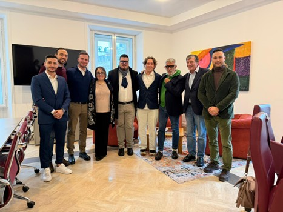

Innovazione
Promuoviamo una visione orientata alla digitalizzazione e alle nuove sfide del mercato.
L’Associazione Nazionale Giovani Periti Industriali nasce con l’obiettivo di rappresentare e sostenere i giovani professionisti iscritti agli Ordini territoriali.
Operiamo per rafforzare il ruolo delle nuove generazioni all’interno del sistema ordinistico, favorendo partecipazione e crescita professionale.
Crediamo in una professione moderna e orientata all’innovazione, capace di rispondere alle sfide tecniche e sociali del nostro tempo.
Mission & Vision. L’ANGPI promuove la crescita e la partecipazione attiva delle nuove generazioni, valorizzando una professione moderna, competente e orientata all’innovazione.
Promuoviamo una visione orientata alla digitalizzazione e alle nuove sfide del mercato.
Sosteniamo la formazione continua attraverso eventi e momenti di aggiornamento.
Diamo voce ai giovani periti industriali favorendo il dialogo costruttivo e la partecipazione.
Favoriamo il network tra professionisti, creando una comunità nazionale coesa.
Il consiglio nazionale ANGPI riunisce professionisti impegnati nella crescita e nella rappresentanza dei giovani periti industriali, coordinando le attività associative a livello nazionale.

Costruiamo insieme il futuro della professione.